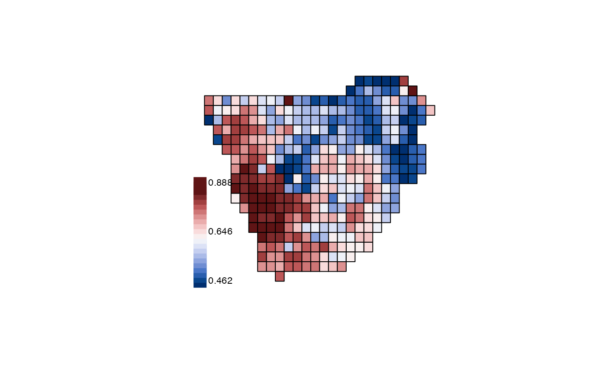

map_trait add species trait values to species distribution
in geographic space.
map_trait(x, trait, FUN = sum, pol = NULL, ...)A community data object - a vector (with names matching trait data) or a data.frame or matrix (with column names matching names in trait data)
A data.frame of species traits with a column of species names matching species names in the community data, and another column with the trait values.
The function used to aggregate species trait values
in geographic space. By default, if FUN = sum, the sum of
all species traits per area or grid cell is calculated.
a vector polygon of grid cells.
Further arguments passed to or from other methods.
A data frame of species traits by site.
data(africa)
library(terra)
p <- vect(system.file("ex/sa.json", package = "phyloregion"))
x <- EDGE(africa$IUCN, africa$phylo, Redlist = "IUCN",
species = "Species")
y <- map_trait(africa$comm, x, FUN = sd, pol = p)
plot(y, "traits", col = hcl.colors(n=20, palette = "Blue-Red 3", rev=FALSE))
